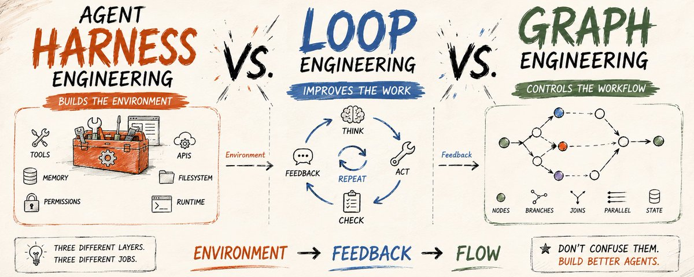
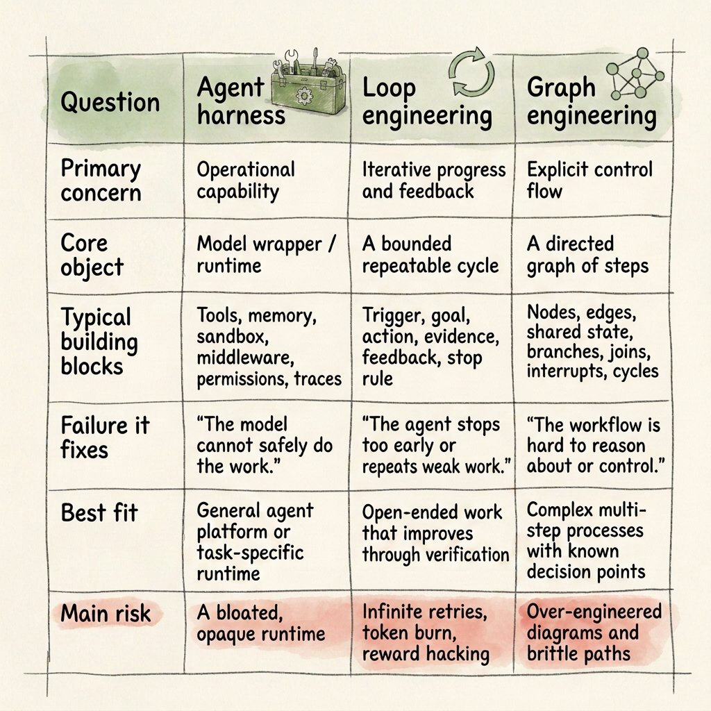
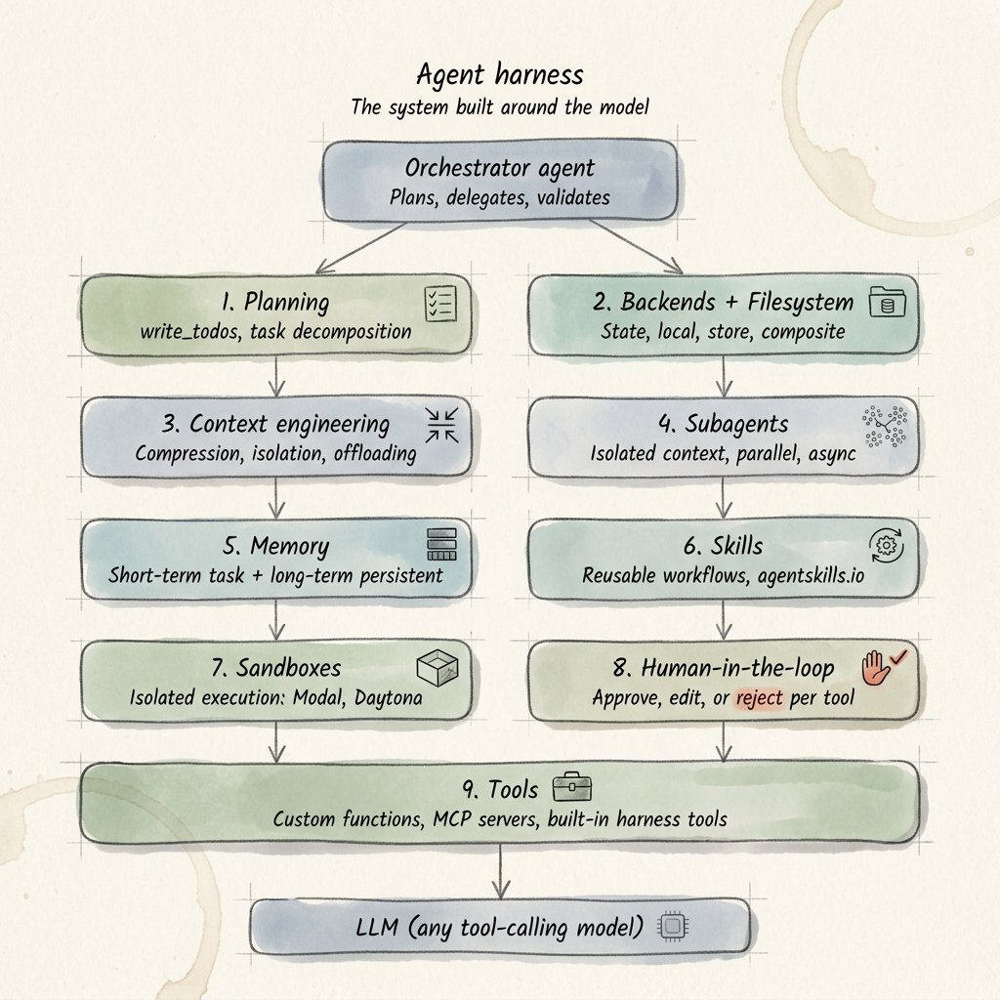
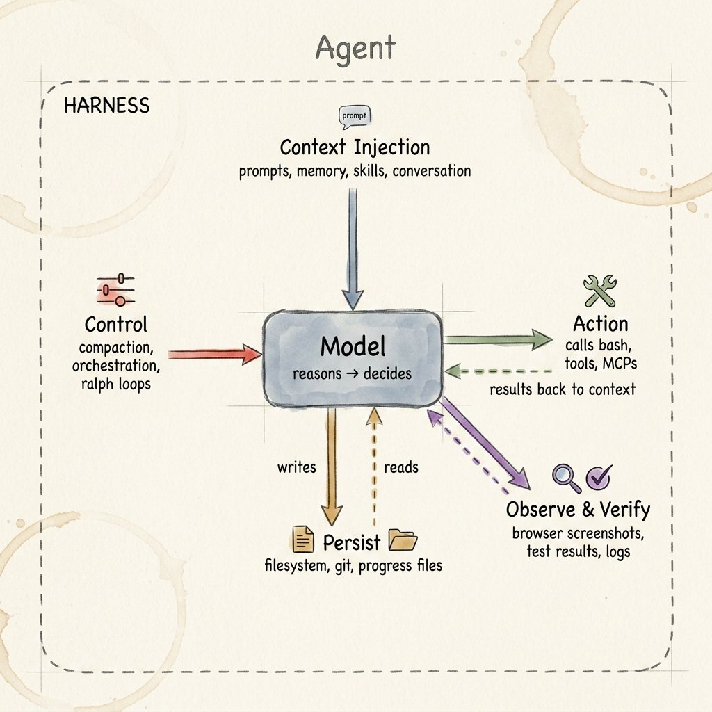
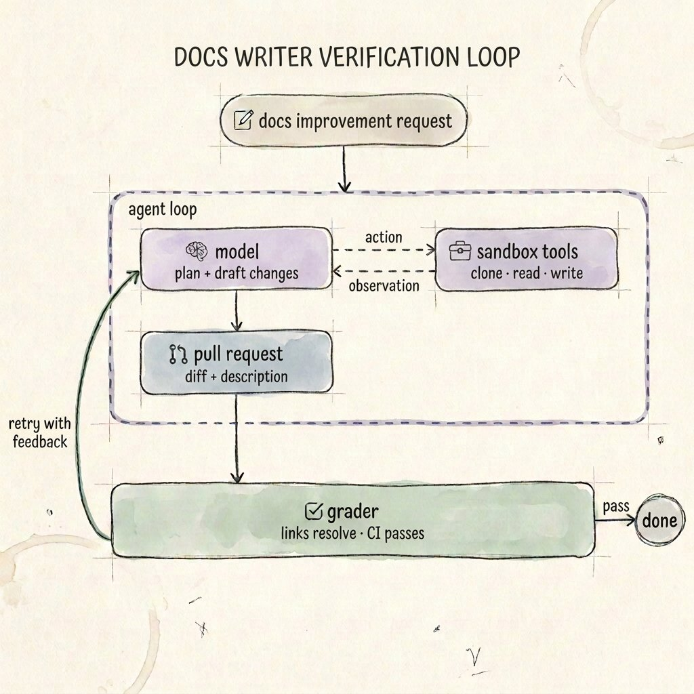
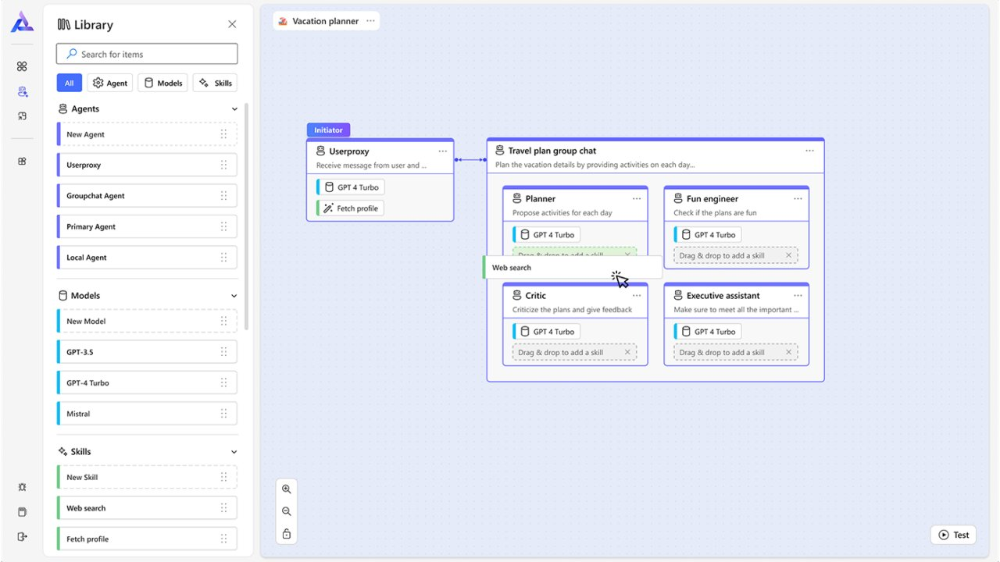
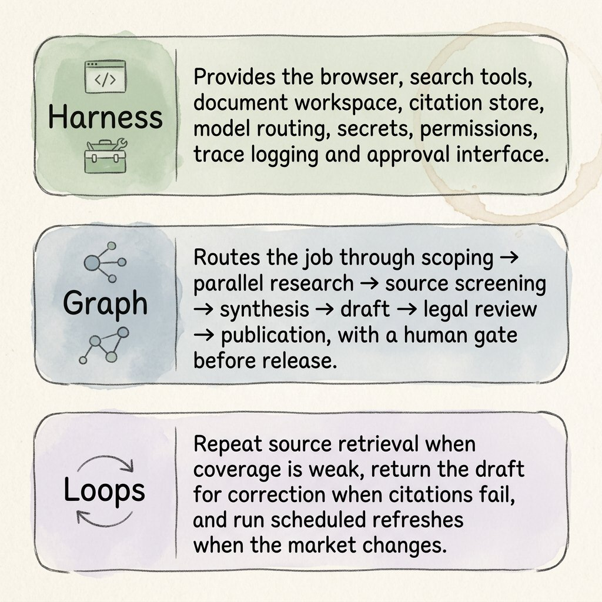

这三个词总被混着用，也难怪：三样东西都围着同一个模型转，都影响 agent 靠不靠谱，里面还都可能有「循环」。但它们不是同义词，各自对应一个不同的工程决定。agent 一旦离开 demo，开始碰真实的文件、API、客户和线上代码，分不清这三层就会出事。
| 层 | 一句话 |
|---|---|
| Harness | 给模型搭干活的环境：工具、记忆、权限、沙箱、日志。 |
| Loop | 设计「干活 → 拿反馈 → 再干」的循环：什么算做完、没做完怎么办、什么时候停。 |
| Graph | 把流程画明白：有哪些步骤、能从哪一步走到哪一步、哪里分叉、哪里汇合、哪里允许回头。 |
作者给的记法是三个词：环境 → 反馈 → 流程（environment → feedback → flow）。

大家先看表的最后一行，每层的主要风险。loop 那一格写着无限重试、烧 token、reward hacking。reward hacking 这个词，全文就在这一格出现过一次，但我觉得它是三层里最难缠的，第 03 章后面会展开讲。
一个光秃秃的大模型，自己没法维护一个项目的状态，没法跑测试，没法看浏览器，没法执行审批规则，也没法把失败的任务重启。这些能力都来自模型所在的环境。
随着 agent 软件慢慢成熟，一套标准的工程分层正在成形。最底下是 agent harness，也就是真正把模型跑起来的那部分代码；往上是 loop，管反复执行和质量检查；最上面是 graph，把整个过程要走的路径画出来。
这些叫法还没有统一。「agent harness」已经开始有比较明确的定义；「loop engineering」是 2026 年才在从业者里流行起来的新词；graph engineering 也别当成一门学科，它说的就是把 agent 的工作流写成明确的有向图或者状态机。作者觉得这么分的好处是，不让一个流行词把真正要做的设计决定盖住。
LangChain 的说法是：agent = 模型 + harness。harness 是模型之外的所有代码、配置和执行逻辑，包括系统提示词、工具定义、记忆、文件系统、沙箱、模型路由、任务交接、中间件钩子、上下文压缩、权限、日志和验证接口。
OpenAI 的 Agents SDK 从运行时的角度讲了同一件事：runner 负责调用模型、执行工具调用、处理交接、保存状态，并且只有在任务真正到达终止条件时才停下。

harness 这个词好用，是因为它把注意力从「哪个模型更强」上挪开了。两个团队用同一个基础模型，结果可以差很远：一边给了干净的工具、稳定的工作区、收紧的权限和看得见的状态，另一边只给了一句含糊的 prompt 和一个时好时坏的 API。模型的聪明程度差不多，干活的条件差远了。
| 组成 | 里面有什么 |
|---|---|
| 上下文注入 | 指令、检索来的事实、对话状态、skills、针对具体任务的规则 |
| 行动面 | API、浏览器、终端、代码解释器、数据库、兼容 MCP 的工具 |
| 持久化 | 文件、检查点、会话、进度日志、git 记录、长期记忆 |
| 执行控制 | 超时、重试、预算、模型路由、开子 agent、审批关口 |
| 安全和治理 | 权限、隔离、白名单、密钥管理、人工授权 |
| 可观测性 | 调用轨迹、工具的输入输出、状态变化、成本、延迟、评测结果 |

作者给了一个特别好记的判断方法：把模型从你的架构图里删掉，剩下的基本都是 harness。工具、数据访问、状态存储、沙箱、中间件、评测器、重试策略、界面，全算。
任务跑得越久，harness 越要紧。Anthropic 做多会话写代码的 agent 时发现，光靠压缩上下文不够用。后来的解法也不是写一个更好的 prompt，而是搭了一套做法：一个初始化步骤、一份进度文件、git 记录，再加上「每次只做一小步」的纪律，让每个新开的上下文都能看懂之前做了什么、还剩什么。等于给 agent 换了一个更好的工作环境。
作者列的几种信号：agent 缺某种能力、出错之后没法干净地恢复、做着做着丢了状态、能碰的东西太多、事后没法审计、换个环境表现就不一样。碰到这些，该修的是 harness。
「把模型删掉，剩下的都是 harness」这句我觉得是全文最实用的一句。大家平时用 Claude Code、Codex，项目里的说明文件、skills、MCP 配置、权限设置，其实都是自己在搭 harness，只是以前没这个名字。agent 表现不好的时候，先别急着换模型，看看这一圈是不是给少了，或者给乱了。
每个会用工具的 agent，内部本来就在转一个小圈：
当开发者有意在这个小圈外面再设计、再叠加新的循环，就进入了 loop engineering。作者举了三种：
LangChain 2026 年的说法是，这是「一叠循环」，不是一个包治百病的 while 语句。
| 要素 | 写清楚什么 |
|---|---|
| 触发 | 什么会开启下一轮：用户请求、定时、测试失败、新数据、评测反馈 |
| 目标 | 一个具体的、要达到的状态，而不是「继续优化」这种模糊指令 |
| 状态和记忆 | 下一轮需要知道什么，又不用把之前的全部重放一遍 |
| 行动边界 | agent 可以改什么、调用什么、交给谁、花多少钱 |
| 证据 | 测试、schema 校验、引用、diff、指标、人工审核 |
| 反馈 | 一段简短、能照着改的说明：证据为什么没通过 |
| 停止规则 | 成功、预算用完、超时、无法恢复的错误、上报给人 |

这一节有句话我特别认：别凭自信循环，凭证据循环（Do not loop on confidence. Loop on evidence.）。「agent 说它做完了」不算停止条件；「测试过了、链接都能打开、schema 校验通过、审核人点了头」才算。
prompt 告诉模型这一次调用里要做什么；loop 规定的是调用结束之后，系统怎么观察结果、选什么反馈、决定要不要继续、怎么保存进度、什么时候停。
prompt 写得好坏依然重要，但 loop 把一次性的指令变成了一个被管理的过程。代价是成本和延迟：每加一个评分器、审核者或者一次重试，就多一次模型调用或者工具运行。Anthropic 的一贯建议是，先用能跑通的最简单架构，只有当效果的提升值得时，才加 agent 的复杂度。loop 也一样，出错的代价高于检查的代价时，才值得加。
「凭证据循环」这句我同意，但我觉得还差半步：证据本身也会量歪。可以很粗略地理解成，检查器量什么，agent 就往什么方向使劲。检查器量歪了，它就照着歪的方向干，循环跑得越勤，交上来的错活越理直气壮。这就是对比表里写的 reward hacking。
这个我前两天刚体验过。我给自己的小红书稿子配了一个检查脚本，量段落多长、页末有没有断在半句、「其实」「真正」这类词有没有超标。10-02 那篇脚本一条都没拦，发出去以后，评论区赞最多的一条有 47 个赞，说文章「溢出屏幕的 AI 感」。脚本量的是节奏，读者读出来的是套路句式。节奏全对，套路一个没少。
后来我给脚本加了一张黑名单，可黑名单只能拦见过的套路，下一种它照样看不见。所以我现在看一个 loop，先不管它循环几次、拿哪个模型当裁判，先看检查器量的东西，跟我真正在乎的东西差多远。
graph engineering 问的是另一个问题：不只是 agent 做什么，而是下一步允许哪个组件运行。步骤是节点，允许的走法是边。边可以表示先后顺序、条件分支、并行展开、汇合、循环和人工打断。状态沿着图流动，图的结构本身就能用来检查控制流对不对。
LangGraph 是给长时间运行、有状态的 agent 用的底层编排框架，强调可持久执行、状态和人在回路里的控制，重点是让人控制 agent，而不是把工作流抽象掉。微软 AutoGen 的文档写得很直白：需要精确控制 agent 的顺序、不同结果走不同的下一步、确定性的分支，或者带循环的复杂多步流程时，用图。
| 决定 | 具体是什么 |
|---|---|
| 节点边界 | 哪些活放进确定性函数，哪些交给一次 LLM 调用、一个专门的 agent，或者一个人工审核步骤 |
| 状态结构 | 每个节点能读什么、能改什么，并行的修改怎么合并 |
| 路由条件 | 什么样的证据让工作往前走、往回退、换一条路，或者上报 |
| 并发 | 什么能并行，什么必须汇合，共享资源怎么协调 |
| 循环和出口 | 哪里允许重试、最多几次、怎样保证这个循环是安全的 |
| 可持久 | 检查点放在哪里，中断之后怎么接着跑 |

这里的 graph engineering 指的是基于图的执行。它和知识图谱不是一回事：知识图谱里，图表示数据里的实体和关系；工作流图表示的是控制流和状态的变化。
流程里有真正的分支、并行、审批、恢复路径，或者有好几个专门的 agent 时，图很有价值。如果活只是「给一个 agent 三个工具，让它自己干」，图就没那么有用。图能帮着排查问题，但也可能太早把假设冻住：如果计划本来就得让模型临场想，把每条可能的路径都硬塞进图里，系统反而更脆。
一个人用 Claude、Codex 干活的话，我觉得大多数时候还用不上这一层。更稳的顺序是先让 agent 跑几遍，看清哪几步每次都一样，再把那几步固定下来。这跟原文第 06 章的第一个错误是一个意思。
作者举的例子是一个负责写行业简报的「调研 + 发布」agent，要求内容属实。

| 层 | 在这个系统里负责什么 |
|---|---|
| Harness | 提供浏览器、搜索工具、文档工作区、引用库、模型路由、密钥、权限、轨迹日志和审批界面 |
| Graph | 把任务按顺序路由：确定范围 → 并行调研 → 筛选来源 → 综合 → 起草 → 法务审核 → 发布，发布前有一道人工关口 |
| Loops | 来源覆盖不够就重新检索；引用对不上就把草稿打回去改；市场有变化就定时刷新 |
注意这里的嵌套关系：graph 跑在 harness 里面；一个或多个 loop 住在 graph 里面；loop 需要的状态、工具和评测器，又都是 harness 提供的。三个概念会有重叠，因为软件分层本来就会重叠，但系统出问题时，每一层都是一根不同的杠杆。
所以排查的思路是：先看故障是哪一类，再决定修哪一层。对照第 00 章那张表里「修的是哪类故障」那一行：模型没法安全地把活干完，修 harness；agent 停得太早或者反复交差活，修 loop；流程难以理解、难以控制，修 graph。
有的团队还没观察过一个能干的 agent 实际怎么解决问题，就把业务流程翻译成几十个节点。更好的顺序是先用一个简单的 harness 跑出调用轨迹，再把稳定的路径固定下来。
自我审查有用，但容易有共同的盲点。能用确定性检查就用；审核时用一个独立的上下文；影响大的动作必须经过人工批准。
没有上限的重试循环就是在漏钱。每个 loop 都需要一个可衡量的目标、新鲜的证据、最大尝试次数和一条写明的上报路径。
工具和记忆不是越多越好。工具太多，选错的概率上升；上下文太杂，模型更容易糊涂；权限太宽，风险变大。
状态过期、工具 schema 含糊、API 坏了、没有退出条件，这些问题模型补不回来。哪一层出的错，就改哪一层。
| 层面 | 要回答的问题 |
|---|---|
| Harness | 工具是不是够窄、有文档、可观测？状态能不能持久保存？权限是不是最小够用？运维的人能不能暂停、检查、恢复一次运行？ |
| Loop | 什么证据能证明成功？失败时返回什么反馈？允许重试几次？预算用完了怎么办？ |
| Graph | 哪些路径必须是确定的？哪里可以并行？哪些状态是共享的？人工关口和恢复路径在哪里？ |
| 评测 | 团队能不能重放真实的调用轨迹、比较不同版本，并且把效果提升归因到一个具体改动上，而不是凭感觉？ |
| 运维 | 线上有没有监控成本、延迟、失败率、人工介入率和任务级成功率？ |
harness 让模型能干活；loop 让干活的过程可迭代、可验证、可恢复；graph 让复杂的执行路径变得明确、可控。三者谁也替代不了谁：harness 丢了状态，图画得再漂亮也没用；harness 再好，loop 没有证据和停止规则，就是在烧钱；loop 设计得再仔细，如果分支、并行和审批都埋在临时写的代码里，系统还是很难运维。三层一起设计，并且团队清楚每一层该解决什么问题，可靠的 agent 系统才会出现。
agent 出问题的时候，我会按这四个问题过一遍。前三个对应原文的三层，第 4 个是我自己加的：
| 症状 | 先修哪里 |
|---|---|
| 它做不了、做着做着忘了前面、手伸得太长 | Harness：补工具，加一份进度文件，收紧权限 |
| 它停得太早，或者一直交差不多的活 | Loop：写清楚什么证据算完成、失败了反馈什么、最多重来几次 |
| 流程说不清下一步该谁接、哪一步必须等人 | 这时候才轮到 Graph |
| 检查全过了，结果还是不对 | 先别换模型，回头看检查器到底在量什么 |
第 4 条最容易被漏掉，因为检查器一过，大家都会松一口气。
给 Claude、Codex 派活的时候，可以把下面这段直接贴在最后。前面几句管 loop（证据、反馈、次数上限、上报），最后一句是让它自己给检查器找漏洞，它不一定找得全，但至少会把「检查过了」和「做对了」分开说。
原文：@beamnxw，2026-07-25，发布于 X。本精读是 Krypto说AI 的中文意译和梳理，配图来自原文；橙色框和第 07 章是我们自己的看法，不代表原作者。内容由 AI 辅助整理。